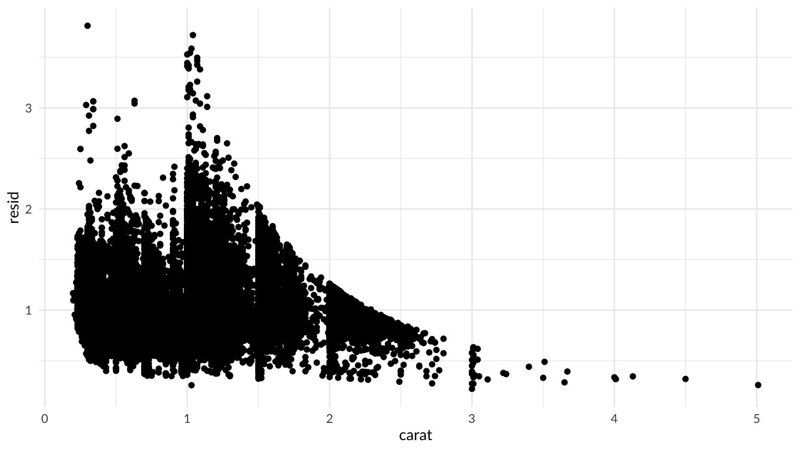
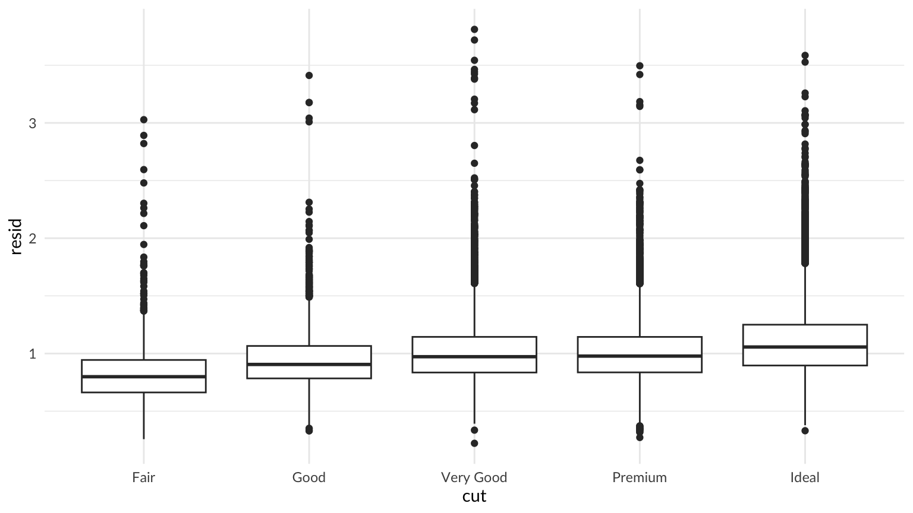

Notes on learning R and RStudio.
Libraries
Load libraries and suppress warning and error messages. Thanks to this tidyverse article.
library(tidyverse)
Files
Files in this project:
.Rbuildignore:.Rhistory:.Rprofile:.Rproj.user:.git:.gitignore:.lintr: lintr configuration fileDESCRIPTION:LICENSE:LICENSE.md:NAMESPACE:README.Rmd:README.md:man:r-training-log.Rmd:r-training-log.nb.html:renv:renv.lock:rtraining.Rproj:setup-r:tests:
Learning R
Resources for learning R.
Already using: these are packages I’m already using in R. Note: much of this has been influenced by the work of Hadley Wickham, who seems to be one of the (if not the most) significant contributors to the modern R and RStudio environment. Most of these have good integration with RStudio.
- renv - for package version management by project
- styler and lintr - for implementing the tidyverse style guide
- Various tidyverse packages, including:
- dplyr
- ggplot2
- glue
- lubridate
- readr
- stringr
- tibble
- tidyr
- Other packages:
- R Notebooks leveraging GitHub Pages
When in doubt, start with the tidyverse, or RStudio sponsored projects, or built-in R.
Completed: I’ve read these.
In progress: I’m reading these now.
Future: I’m planning on adopting these to improve my code quality.
Also helpful: some additional helpful links, either from me or recommended by others.
- RStudio Education - the Beginners page
- janitor - automate data cleanup
- purrr - for list iteration
- broom - for getting classic stats objects into tidy shapes that are easier to work with
References: other good reference sites.
- Yan Holtz has some good sites for data visualization:
R for Data Science
Selected highlights from the book:
Patterns and models
7.6 Patterns and models covers models and residuals, here showing how to reveal the expected relationship between cut and price:
library(modelr)
mod <- lm(log(price) ~ log(carat), data = diamonds)
diamonds2 <- diamonds %>%
add_residuals(mod) %>%
mutate(resid = exp(resid))
ggplot(data = diamonds2) +
geom_point(mapping = aes(x = carat, y = resid))

ggplot(data = diamonds2) +
geom_boxplot(mapping = aes(x = cut, y = resid))

Non-Tidy Data
Hadley advocates for “tidy” data, but there are times when data is usefully non-tidy.
Graphics: Learning more
From 28.8 Learning more:
"The absolute best place to learn more is the ggplot2 book: ggplot2: Elegant graphics for data analysis. It goes into much more depth about the underlying theory, and has many more examples of how to combine the individual pieces to solve practical problems. Unfortunately, the book is not available online for free, although you can find the source code at https://github.com/hadley/ggplot2-book.
Another great resource is the ggplot2 extensions gallery https://exts.ggplot2.tidyverse.org/gallery/. This site lists many of the packages that extend ggplot2 with new geoms and scales. It’s a great place to start if you’re trying to do something that seems hard with ggplot2."
R Markdown Websites
From 29.8 Websites:
"With a little additional infrastructure you can use R Markdown to generate a complete website:
- Put your
.Rmd files in a single directory. index.Rmd will become the home page.
- Add a YAML file named
_site.yml provides the navigation for the site. For example:
name: "my-website"
navbar:
title: "My Website"
left:
- text: "Home"
href: index.html
- text: "Viridis Colors"
href: 1-example.html
- text: "Terrain Colors"
href: 3-inline.html
Execute rmarkdown::render_site() to build _site, a directory of files ready to deploy as a standalone static website, or if you use an RStudio Project for your website directory. RStudio will add a Build tab to the IDE that you can use to build and preview your site.
Read more at http://rmarkdown.rstudio.com/rmarkdown_websites.html."
LS0tCnRpdGxlOiAiUiBUcmFpbmluZyBMb2ciCmRhdGU6IDIwMjAtMTItMDIKb3V0cHV0OgogIGh0bWxfZG9jdW1lbnQ6CiAgICB0b2M6IFRSVUUKICAgIHRvY19mbG9hdDoKICAgICAgY29sbGFwc2VkOiBGQUxTRQogICAgICBzbW9vdGhfc2Nyb2xsOiBGQUxTRQotLS0KCk5vdGVzIG9uIGxlYXJuaW5nIFIgYW5kIFJTdHVkaW8uCgojIExpYnJhcmllcwoKTG9hZCBsaWJyYXJpZXMgYW5kIHN1cHByZXNzIHdhcm5pbmcgYW5kIGVycm9yIG1lc3NhZ2VzLiBUaGFua3MgdG8gdGhpcyB0aWR5dmVyc2UgW2FydGljbGVdKGh0dHBzOi8vcmVwcmV4LnRpZHl2ZXJzZS5vcmcvYXJ0aWNsZXMvYXJ0aWNsZXMvc3VwcHJlc3Mtc3RhcnR1cC1tZXNzYWdlcy5odG1sKS4KCmBgYHtyIHN0YXJ0dXAsIG1lc3NhZ2UgPSBGQUxTRSwgd2FybmluZyA9IEZBTFNFfQpsaWJyYXJ5KHRpZHl2ZXJzZSkKYGBgCgojIEZpbGVzCgpGaWxlcyBpbiB0aGlzIHByb2plY3Q6CgotIGAuUmJ1aWxkaWdub3JlYDoKLSBgLlJoaXN0b3J5YDoKLSBgLlJwcm9maWxlYDoKLSBgLlJwcm9qLnVzZXJgOgotIGAuZ2l0YDoKLSBgLmdpdGlnbm9yZWA6Ci0gYC5saW50cmA6IFtsaW50cl0oaHR0cHM6Ly9naXRodWIuY29tL2ppbWhlc3Rlci9saW50cikgY29uZmlndXJhdGlvbiBmaWxlCi0gYERFU0NSSVBUSU9OYDoKLSBgTElDRU5TRWA6Ci0gYExJQ0VOU0UubWRgOgotIGBOQU1FU1BBQ0VgOgotIGBSRUFETUUuUm1kYDoKLSBgUkVBRE1FLm1kYDoKLSBgbWFuYDoKLSBgci10cmFpbmluZy1sb2cuUm1kYDoKLSBgci10cmFpbmluZy1sb2cubmIuaHRtbGA6Ci0gYHJlbnZgOgotIGByZW52LmxvY2tgOgotIGBydHJhaW5pbmcuUnByb2pgOgotIGBzZXR1cC1yYDoKLSBgdGVzdHNgOgoKIyBOb3QgUgoKTm90IFIsIGJ1dCBoYXMgYWR2aWNlIG9uIGdpdCBiZXN0IHByYWN0aWNlcyBhbmQgYSBndWlkZSB0byBmaXhpbmcgY29tbWl0IG1pc3Rha2VzOiA8aHR0cHM6Ly9zZXRocm9iZXJ0c29uLmdpdGh1Yi5pbz4KCiMgTGVhcm5pbmcgUgoKUmVzb3VyY2VzIGZvciBsZWFybmluZyBSLgoKKipBbHJlYWR5IHVzaW5nOioqIHRoZXNlIGFyZSBwYWNrYWdlcyBJJ20gYWxyZWFkeSB1c2luZyBpbiBSLiAqTm90ZToqIG11Y2ggb2YgdGhpcyBoYXMgYmVlbiBpbmZsdWVuY2VkIGJ5IHRoZSB3b3JrIG9mIFtIYWRsZXkgV2lja2hhbV0oaHR0cDovL2hhZGxleS5uei8pLCB3aG8gc2VlbXMgdG8gYmUgb25lIG9mIHRoZSAoaWYgbm90IHRoZSBtb3N0KSBzaWduaWZpY2FudCBjb250cmlidXRvcnMgdG8gdGhlIG1vZGVybiBSIGFuZCBSU3R1ZGlvIGVudmlyb25tZW50LiBNb3N0IG9mIHRoZXNlIGhhdmUgZ29vZCBpbnRlZ3JhdGlvbiB3aXRoIFJTdHVkaW8uCgotIFtyZW52XShodHRwczovL2dpdGh1Yi5jb20vcnN0dWRpby9yZW52KSAtIGZvciBwYWNrYWdlIHZlcnNpb24gbWFuYWdlbWVudCBieSBwcm9qZWN0Ci0gW3N0eWxlcl0oaHR0cHM6Ly9zdHlsZXIuci1saWIub3JnLykgYW5kIFtsaW50cl0oaHR0cHM6Ly9naXRodWIuY29tL2ppbWhlc3Rlci9saW50cikgLSBmb3IgaW1wbGVtZW50aW5nIHRoZSBbdGlkeXZlcnNlIHN0eWxlIGd1aWRlXShodHRwczovL3N0eWxlLnRpZHl2ZXJzZS5vcmcvKQotIFZhcmlvdXMgW3RpZHl2ZXJzZV0oaHR0cHM6Ly93d3cudGlkeXZlcnNlLm9yZy8pIHBhY2thZ2VzLCBpbmNsdWRpbmc6CiAgLSBkcGx5cgogIC0gZ2dwbG90MgogIC0gZ2x1ZQogIC0gbHVicmlkYXRlCiAgLSByZWFkcgogIC0gc3RyaW5ncgogIC0gdGliYmxlCiAgLSB0aWR5cgotIE90aGVyIHBhY2thZ2VzOgogIC0gZ3QKICAtIGthYmxlRXh0cmEKICAtIG1pbmlVSSAoZm9yIFJTdHVkaW8gcGx1Z2lucykKICAtIG9wZW54bHN4CiAgLSBrbml0cjogdGhlcmUgaXMgYSB1c2VmdWwgW2tuaXRyLXNwaW4uUl0oaHR0cHM6Ly9naXRodWIuY29tL3lpaHVpL2tuaXRyL2Jsb2IvbWFzdGVyL2luc3QvZXhhbXBsZXMva25pdHItc3Bpbi5SKSBkZW1vIHNjcmlwdCB0aGF0IHNob3dzIGhvdyB0byBrbml0IGFuIFIgc2NyaXB0IChmcm9tIDxodHRwczovL3lpaHVpLm9yZy9rbml0ci9kZW1vL3N0aXRjaC8+KSAtIEkgYnJpZWZseSBleHBsb3JlZCB0aGlzIGFzIGFuIGFsdGVybmF0aXZlIHRvIG5vdGVib29rcwotIFIgTm90ZWJvb2tzIGxldmVyYWdpbmcgR2l0SHViIFBhZ2VzCgpXaGVuIGluIGRvdWJ0LCBzdGFydCB3aXRoIHRoZSB0aWR5dmVyc2UsIG9yIFJTdHVkaW8gc3BvbnNvcmVkIHByb2plY3RzLCBvciBidWlsdC1pbiBSLgoKKipDb21wbGV0ZWQ6KiogSSd2ZSByZWFkIHRoZXNlLgoKLSBbUiBmb3IgRGF0YSBTY2llbmNlXShodHRwczovL3I0ZHMuaGFkLmNvLm56LykgLSBIYWRsZXkncyBpbnRybyBib29rCgoqKkluIHByb2dyZXNzOioqIEknbSByZWFkaW5nIHRoZXNlIG5vdy4KCi0gRnVsbCBbZ2dwbG90Ml0oaHR0cHM6Ly9nZ3Bsb3QyLnRpZHl2ZXJzZS5vcmcvcmVmZXJlbmNlL2luZGV4Lmh0bWwpIGRvY3VtZW50YXRpb24gT1IKLSBnZ3Bsb3QyIGJvb2ssIDNyZCBlZGl0aW9uIGRyYWZ0OiA8aHR0cHM6Ly9nZ3Bsb3QyLWJvb2sub3JnPgoKKipGdXR1cmU6KiogSSdtIHBsYW5uaW5nIG9uIGFkb3B0aW5nIHRoZXNlIHRvIGltcHJvdmUgbXkgY29kZSBxdWFsaXR5LgoKLSBbdGVzdHRoYXRdKGh0dHBzOi8vdGVzdHRoYXQuci1saWIub3JnLykgLSBSIHRlc3RpbmcgZnJhbWV3b3JrCi0gW3JveHlnZW4yXShodHRwczovL2dpdGh1Yi5jb20vci1saWIvcm94eWdlbjIpIC0gZG9jdW1lbnQgZnVuY3Rpb25zIGlubGluZQotIFtBZHZhbmNlZCBSXShodHRwczovL2Fkdi1yLmhhZGxleS5uei8pIC0gbW9yZSBIYWRsZXkKLSBbUiBQYWNrYWdlc10oaHR0cHM6Ly9yLXBrZ3Mub3JnLykgLSBldmVuIG1vcmUgSGFkbGV5CgoqKkFsc28gaGVscGZ1bDoqKiBzb21lIGFkZGl0aW9uYWwgaGVscGZ1bCBsaW5rcywgZWl0aGVyIGZyb20gbWUgb3IgcmVjb21tZW5kZWQgYnkgb3RoZXJzLgoKLSBbUlN0dWRpbyBFZHVjYXRpb25dKGh0dHBzOi8vZWR1Y2F0aW9uLnJzdHVkaW8uY29tL2xlYXJuL2JlZ2lubmVyLykgLSB0aGUgQmVnaW5uZXJzIHBhZ2UKLSBbamFuaXRvcl0oaHR0cHM6Ly9nYXJ0aHRhcnIuZ2l0aHViLmlvL21lYXRSL2phbml0b3IuaHRtbCkgLSBhdXRvbWF0ZSBkYXRhIGNsZWFudXAKLSBbcHVycnJdKGh0dHBzOi8vcHVycnIudGlkeXZlcnNlLm9yZy8pIC0gZm9yIGxpc3QgaXRlcmF0aW9uCi0gW2Jyb29tXShodHRwczovL2dpdGh1Yi5jb20vdGlkeW1vZGVscy9icm9vbSkgLSBmb3IgZ2V0dGluZyBjbGFzc2ljIHN0YXRzIG9iamVjdHMgaW50byB0aWR5IHNoYXBlcyB0aGF0IGFyZSBlYXNpZXIgdG8gd29yayB3aXRoCgoqKlJlZmVyZW5jZXM6Kiogb3RoZXIgZ29vZCByZWZlcmVuY2Ugc2l0ZXMuCgotIFtZYW4gSG9sdHpdKGh0dHBzOi8vd3d3Lnlhbi1ob2x0ei5jb20pIGhhcyBzb21lIGdvb2Qgc2l0ZXMgZm9yIGRhdGEgdmlzdWFsaXphdGlvbjoKICAtIFt0aGUgUiBHcmFwaCBHYWxsZXJ5XShodHRwczovL3d3dy5yLWdyYXBoLWdhbGxlcnkuY29tKSAtIGNoYXJ0cyBtYWRlIHdpdGggUiBhbmQgZ2dwbG90MgogIC0gW2Zyb20gRGF0YSB0byBWaXpdKGh0dHBzOi8vd3d3LmRhdGEtdG8tdml6LmNvbSkgLSByZWNvbW1lbmRhdGlvbnMgb24gZGF0YSB2aXN1YWxpemF0aW9uCiAgLSBIZSBhbHNvIGhhcyBzb21lIHRpcHMgb24gW1IgTWFya2Rvd25dKGh0dHBzOi8vaG9sdHp5LmdpdGh1Yi5pby9QaW1wLW15LXJtZC8pCgojIyBSIGZvciBEYXRhIFNjaWVuY2UKClNlbGVjdGVkIGhpZ2hsaWdodHMgZnJvbSB0aGUgYm9vazoKCiMjIyBQYXR0ZXJucyBhbmQgbW9kZWxzCgpbNy42IFBhdHRlcm5zIGFuZCBtb2RlbHNdKGh0dHBzOi8vcjRkcy5oYWQuY28ubnovZXhwbG9yYXRvcnktZGF0YS1hbmFseXNpcy5odG1sI3BhdHRlcm5zLWFuZC1tb2RlbHMpIGNvdmVycyBtb2RlbHMgYW5kIHJlc2lkdWFscywgaGVyZSBzaG93aW5nIGhvdyB0byByZXZlYWwgdGhlIGV4cGVjdGVkIHJlbGF0aW9uc2hpcCBiZXR3ZWVuIGN1dCBhbmQgcHJpY2U6CgpgYGB7ciBtb2RlbHN9CmxpYnJhcnkobW9kZWxyKQoKbW9kIDwtIGxtKGxvZyhwcmljZSkgfiBsb2coY2FyYXQpLCBkYXRhID0gZGlhbW9uZHMpCgpkaWFtb25kczIgPC0gZGlhbW9uZHMgJT4lCiAgYWRkX3Jlc2lkdWFscyhtb2QpICU+JQogIG11dGF0ZShyZXNpZCA9IGV4cChyZXNpZCkpCgpnZ3Bsb3QoZGF0YSA9IGRpYW1vbmRzMikgKwogIGdlb21fcG9pbnQobWFwcGluZyA9IGFlcyh4ID0gY2FyYXQsIHkgPSByZXNpZCkpCgpnZ3Bsb3QoZGF0YSA9IGRpYW1vbmRzMikgKwogIGdlb21fYm94cGxvdChtYXBwaW5nID0gYWVzKHggPSBjdXQsIHkgPSByZXNpZCkpCmBgYAoKIyMjIE5vbi1UaWR5IERhdGEKCkhhZGxleSBhZHZvY2F0ZXMgZm9yICJ0aWR5IiBkYXRhLCBidXQgdGhlcmUgYXJlIHRpbWVzIHdoZW4gZGF0YSBpcyB1c2VmdWxseSBbbm9uLXRpZHldKGh0dHBzOi8vc2ltcGx5c3RhdGlzdGljcy5vcmcvMjAxNi8wMi8xNy9ub24tdGlkeS1kYXRhLykuCgojIyMgR3JhcGhpY3M6IExlYXJuaW5nIG1vcmUKCkZyb20gWzI4LjggTGVhcm5pbmcgbW9yZV0oaHR0cHM6Ly9yNGRzLmhhZC5jby5uei9ncmFwaGljcy1mb3ItY29tbXVuaWNhdGlvbi5odG1sI2xlYXJuaW5nLW1vcmUtNCk6CgoiVGhlIGFic29sdXRlIGJlc3QgcGxhY2UgdG8gbGVhcm4gbW9yZSBpcyB0aGUgZ2dwbG90MiBib29rOiBbX2dncGxvdDI6IEVsZWdhbnQgZ3JhcGhpY3MgZm9yIGRhdGEgYW5hbHlzaXNfXShodHRwczovL2Ftem4uY29tLzMzMTkyNDI3NVgpLiBJdCBnb2VzIGludG8gbXVjaCBtb3JlIGRlcHRoIGFib3V0IHRoZSB1bmRlcmx5aW5nIHRoZW9yeSwgYW5kIGhhcyBtYW55IG1vcmUgZXhhbXBsZXMgb2YgaG93IHRvIGNvbWJpbmUgdGhlIGluZGl2aWR1YWwgcGllY2VzIHRvIHNvbHZlIHByYWN0aWNhbCBwcm9ibGVtcy4gVW5mb3J0dW5hdGVseSwgdGhlIGJvb2sgaXMgbm90IGF2YWlsYWJsZSBvbmxpbmUgZm9yIGZyZWUsIGFsdGhvdWdoIHlvdSBjYW4gZmluZCB0aGUgc291cmNlIGNvZGUgYXQgPGh0dHBzOi8vZ2l0aHViLmNvbS9oYWRsZXkvZ2dwbG90Mi1ib29rPi4KIApBbm90aGVyIGdyZWF0IHJlc291cmNlIGlzIHRoZSBnZ3Bsb3QyIGV4dGVuc2lvbnMgZ2FsbGVyeSA8aHR0cHM6Ly9leHRzLmdncGxvdDIudGlkeXZlcnNlLm9yZy9nYWxsZXJ5Lz4uIFRoaXMgc2l0ZSBsaXN0cyBtYW55IG9mIHRoZSBwYWNrYWdlcyB0aGF0IGV4dGVuZCBnZ3Bsb3QyIHdpdGggbmV3IGdlb21zIGFuZCBzY2FsZXMuIEl0J3MgYSBncmVhdCBwbGFjZSB0byBzdGFydCBpZiB5b3UncmUgdHJ5aW5nIHRvIGRvIHNvbWV0aGluZyB0aGF0IHNlZW1zIGhhcmQgd2l0aCBnZ3Bsb3QyLiIKCiMjIyBSIE1hcmtkb3duIFdlYnNpdGVzCgpGcm9tIFsyOS44IFdlYnNpdGVzXShodHRwczovL3I0ZHMuaGFkLmNvLm56L3ItbWFya2Rvd24tZm9ybWF0cy5odG1sI3dlYnNpdGVzKToKCiJXaXRoIGEgbGl0dGxlIGFkZGl0aW9uYWwgaW5mcmFzdHJ1Y3R1cmUgeW91IGNhbiB1c2UgUiBNYXJrZG93biB0byBnZW5lcmF0ZSBhIGNvbXBsZXRlIHdlYnNpdGU6CgotIFB1dCB5b3VyIGAuUm1kYCBmaWxlcyBpbiBhIHNpbmdsZSBkaXJlY3RvcnkuIGBpbmRleC5SbWRgIHdpbGwgYmVjb21lIHRoZSBob21lIHBhZ2UuCi0gQWRkIGEgWUFNTCBmaWxlIG5hbWVkIGBfc2l0ZS55bWxgIHByb3ZpZGVzIHRoZSBuYXZpZ2F0aW9uIGZvciB0aGUgc2l0ZS4gRm9yIGV4YW1wbGU6CgpgYGAKbmFtZTogIm15LXdlYnNpdGUiCm5hdmJhcjoKICB0aXRsZTogIk15IFdlYnNpdGUiCiAgbGVmdDoKICAgIC0gdGV4dDogIkhvbWUiCiAgICAgIGhyZWY6IGluZGV4Lmh0bWwKICAgIC0gdGV4dDogIlZpcmlkaXMgQ29sb3JzIgogICAgICBocmVmOiAxLWV4YW1wbGUuaHRtbAogICAgLSB0ZXh0OiAiVGVycmFpbiBDb2xvcnMiCiAgICAgIGhyZWY6IDMtaW5saW5lLmh0bWwKYGBgCgpFeGVjdXRlIGBybWFya2Rvd246OnJlbmRlcl9zaXRlKClgIHRvIGJ1aWxkIGBfc2l0ZWAsIGEgZGlyZWN0b3J5IG9mIGZpbGVzIHJlYWR5IHRvIGRlcGxveSBhcyBhIHN0YW5kYWxvbmUgc3RhdGljIHdlYnNpdGUsIG9yIGlmIHlvdSB1c2UgYW4gUlN0dWRpbyBQcm9qZWN0IGZvciB5b3VyIHdlYnNpdGUgZGlyZWN0b3J5LiBSU3R1ZGlvIHdpbGwgYWRkIGEgQnVpbGQgdGFiIHRvIHRoZSBJREUgdGhhdCB5b3UgY2FuIHVzZSB0byBidWlsZCBhbmQgcHJldmlldyB5b3VyIHNpdGUuIAoKUmVhZCBtb3JlIGF0IDxodHRwOi8vcm1hcmtkb3duLnJzdHVkaW8uY29tL3JtYXJrZG93bl93ZWJzaXRlcy5odG1sPi4iCgojIyMgUiBOb3RlYm9vayBBZHZpY2UKCkhhZGxleSBoYXMgc29tZSBnb29kIHN1Z2dlc3Rpb25zIGZvciBSIE5vdGVib29rcyBpbiBbMzAgUiBNYXJrZG93biB3b3JrZmxvd10oaHR0cHM6Ly9yNGRzLmhhZC5jby5uei9yLW1hcmtkb3duLXdvcmtmbG93Lmh0bWwpLgo=